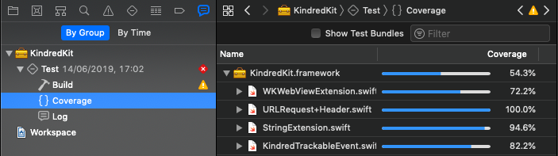
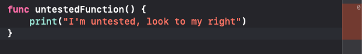

Unit Testing
Best Practices
When I first learnt how to unit test I looked up a tutorial showing me how to write a test for a simple model and it seemed pretty straight forward. When I tried to apply what I learnt in my project I soon encountered a lot of difficulties.
- How do I test ViewControllers?
- How do I test private functions?
- How do I test static functions?
- How do I test network calls?
- How do I test UserDefaults?
- How do I make my class testable?
Unit testing isn’t nearly as simple as most tutorials make out and it’s one of the main reasons so many teams have little to no coverage in their projects. Yet having good coverage is vital to having a maintainable project.
Unit tests keep our code flexible, maintainable and reusable. Without them every change is a possible bug.
Over the coming series of blog posts I will attempt to cover the questions above when it comes to unit testing in Xcode. In this article I’ll broach some overarching concepts mostly taken from Robert Martin’s excellent book Clean Code.
F.I.R.S.T
All tests should follow the FIRST principles
Fast
We want to run these tests regularly and often by smashing command U whenever we’ve made changes or we're about to commit our work. For this to work we need our tests to be fast. How fast is fast? We’re going to be writing a lot of tests so at the very minimum a test should be under 0.1 seconds.
Independent
Don’t write tests that depend on each other.
Xcode actively helps us with this, every function in an XCTestCase class that begins with “test” will receive a
new instance of your test class so no variables can be carried over.
setup() and teardown() can be used to clear persistent resources but it would be better
still to mock them. You should be able to run your tests in any order and have them pass.
Repeatable
Tests should run on any environment. If your unit tests only work on your laptop, your companies VPN or with a network connection they can’t be run reliably and your team will second guess why they’ve failed or ignore them.
Self-Validating
Tests should simply fail or pass and not rely on a log.
I slipped up on this point when writing one of my first “unit tests” which tested the parsing of phone numbers from
email text. It had a giant log with the % of phone numbers we parsed alongside a print out of all the ones which had
failed and a spreadsheet I’d keep up to date the results for each version of our app.
Timely
Write them with, or better yet before your code. If you do it after your production code may be difficult to test.
Clean Tests
Do not adopt a dual standard where readability is neglected for tests. As your code changes your tests will have to change people who did not initially write them will have to understand them so that they can adapt them, extend them or remove tests that are no longer relevant without losing coverage. XCTest classes can and should have instance variables and helper functions to enhance readability and reduce repetition.
Smaller Tests
Minimize the number of asserts and test just one concept per test function. Smaller tests are easier to read and
give clearer failure results. Any repetitive setup involved in doing this can be handled by setup() or
private helper functions
Don't
Do
Enable Test Coverage
Using a coverage tool allows you to immediately see gaps in your testing strategy.
Xcode has a built in coverage tool which at the time of writing is not enabled by default.
Enable it by going to your scheme (to the right of the stop button) -> edit schemes -> Test ->
Options and check “Gather coverage”.
Once this is enabled you can view your projects coverage within the reports tab (command - 9)
Better yet Xcode will even highlight untested functions with a red border as seen below.
Setup Continuous Integration
Tools such as Jenkins or Travis can run your tests when someone makes a Pull Request and automatically block the PR if the tests failed. This is a vital tool to have as without it it’s possible to merge branches with failing tests. If tests can be ignored then there’s no point in having them.
Test Behaviours rather than functions
As nice as it is to have a test coverage tool you often need to do much more than just test that the function works under normal conditions. Push it to the limit and put edge cases in which will really push your code to the limit. The date tests above are a good example of this.
Conclusion
Testing isn’t as straight forward as most tutorials will tell you, this article doesn’t come close to covering all the difficulties you can potentially face either. It’s one of the most important skills you can learn, is universally needed across all languages and platforms and is probably the easiest tell tale sign of picking out the good devs from the great devs. Stay tuned and we’ll have more articles diving in to testing in more detail in the coming weeks.